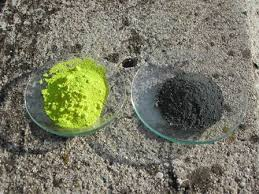
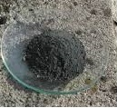

Dicono che Van Googh non avrebbe mai potuto dipingere i suoi girasoli senza il Giallo di Cadmio.
Ci credo senza difficoltà, tanto è bello e solare il colore di questo pigmento a base di solfuro di questo metallo.
Vi sono in commercio varie tonalità di "gialli di cadmio", che vanno dal giallo limone all'aranciato, di composizione varia e difficilmente definibile; ogni fabbrica ha la sua formula segreta, fatto salvo l'ingrediente fondamentale.
Il colore dipende inoltre dal modo e dalle condizioni di preparazione del solfuro.
Aggiungo che a base di cadmio esiste un altro interessante pigmento, rosso questa volta, ed è il seleniuro CdSe.
I fedeli lettori di questo blog ricorderanno che tempo addietro avevo fatto il tentativo (perfettamente riuscito!) di estrarre il selenio dal pigmento rosso, tralasciando il metallo; oggi farò il contrario: estrarre il cadmio metallico dal giallo di Van Googh, scartando lo zolfo!
Girovagando in rete ho trovato questa bella esperienza che sfrutta in maniera didattica la legge dell'azione di massa e del prodotto di solubilità.
Come il solito cito soltanto i concetti teorici e non approfondisco (per questo ci sono il libri, o magari, se si ha fretta, ci si può rivolgre al più venerato di tutti i Santi moderni, San Google...).
La reazione da sfruttare in questo esperimento è la seguente:
CdS + CuSO4 --> CuS + CdSO4
Ma avviene una reazione del genere? CdS è del tutto insolubile in acqua! Ma verrà solo una pappetta gialla verdastra!
No, non viene una pappetta gialla verdastra... il trucco sta nello sfruttare il bassissimo prodotto di solubilità (Kps) del solfuro di rame rispetto a quello di cadmio.
Allora, se mettiamo in contatto il CdS (che è appunto apparentemente del tutto insolubile) con un sale di rame, quei pochissimi ioni solfuro S2- che saranno in soluzione (il Kps del CdS è 1*10-27) reagiranno con gli ioni rame a formare il CuS, il quale, avendo un Kps molto più basso (8*10-37) precipiterà e si sottrarrà all'ambiente. E lui che comanda in questo caso, avendo il prodotto di solubilità inferiore!
Ma se ioni S2- sono stati così consumati per formare CuS, altro CdS dovrà sciogliersi (per la legge dell'azione di massa il prodotto Cd2+ e S2- deve essere costante) e il ciclo potrà continuare... fino al consumo totale del solfuro di cadmio che si sarà trasformato in solfato e alla precipitazione totale del rame che si sarà trasformato in solfuro!
Ecco che alla fine avremo ottenuto ioni cadmio in soluzione, sfruttabili per qualsiasi reazione.
Veniamo alla pratica.
Ho sciolto 22 g di solfato di rame in 100 ml di acqua calda e vi ho aggiunti poi 15 g di CdS pigmento, mescolando bene e portando pian piano all'ebollizione.
Ho usato un difetto di solfato rispetto al teorico per non avere poi sali di rame solubili nella soluzione finale.
Il colore passa subito dal giallo verdastro (giallo intenso + azzurro tenue) ad una tonalità sempre più scura, indice delle formazione del nerissimo solfuro di rame.
Lasciar bollire dolcemente per una ventina di minuti; alla fine la sospensione sarà assolutamente nera.
Non ho filtrato ma ho lasciato decantare tranquillamente, separando con una pipetta il liquido limpido dal fondo insolubile.
Saggiando la soluzione con ammoniaca e solfuro ammonico non si deve avere colorazione rispettivamente azzurra e nera, segno che tutto il rame è precipitato come solfuro.
Ottenuta la soluzione di solfato di cadmio si può procedere alla separazione di questo sale per evaporazione, cosa che farò in una esperienza successiva; siccome oggi si voleva ottenere solo il metallo, passiamo alla seconda fase del lavoro.
Il cadmio, essendo meno elettronegativo dello zinco (-0,40 V contro -0,76 V) viene da questo precipitato facilmente dalle sue soluzioni.
Ho immerso nella soluzione di CdSO4 una laminetta ben pulita di zinco, che si è istantaneamente ricoperta da una patina nera di cadmio metallico finemente suddiviso; ho lasciato in immersione per una giornata, ogni tanto staccando con una spatolina il prodotto aderente (ma non è indispensabile, quando il cadmio comincia a "pesare" si stacca da solo).
CdSO4 + Zn --> Cd + ZnSO4
Alla fine si può controllare che la reazione sia completa con una goccia di solfuro ammonico: non si deve avere nessuna tonalità gialla nel precipitato ma solo il bianco del solfuro di zinco.
Ho filtrato e lavato più volte, mettendo poi ad asciugare all'aria.
Ho ottenuto la polvere grigio scura che vediamo nell'immagine, accanto al giallo intenso del materiale di partenza (in realtà giallo puro, senza la nota verdastra della foto).

Il metallo così suddiviso si ossida facilmente per riscaldamento ben prima della fusione(321°), trasformandosi in ossido CdO bruno rossastro.Per fusione con cloruro ammonico il più possibile fuori del contatto dell'aria si può ottenere un bottoncino di cadmio metallico nella sua forma più classica (ho provato molto in piccolo, le foto non sarebbero state significative).
Ho ottenuto alla fine 7,9 g di metallo, pari a circa il 68% di resa; non mi aspettavo di più, considerando che ho scartato il CuS inglobante parecchia soluzione, i vari passaggi e che il materiale di partenza sicuramente non è CdS puro, ma solo un pigmento commerciale.

Ecco il cadmio polvere